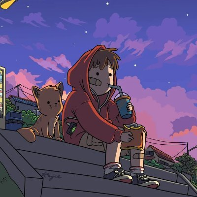

Jahaziel 'Jay' Garcia
Web Developer

Summary
Hardworking and dedicated individual with experience in freelance programming work, fluent with C++, HTML/CSS, JavaScript and Python.
Education
- Associates Degree - Interdisciplinary Studies - South Texas College (2016-2018)
Work Experience
- Marketing Executive - Farmers Insurance
July 2022 - September 2023
- Dealt with B2B communications to setup collaborative events.
- Created and maintained a social media presence for the company.
- Created and maintained a website for the company.
- Directed and edited video content
- Created all graphics/prints from scratch
June 2020 - Present
- Created a website for a local business.
- Created and maintained customer relations from the start of the project to completion.
- Created and maintained my own public image for marketing purposes.
Skills
- C++ 👾👾👾👾
- HTML/CSS 👾👾👾👾👾
- JavaScript 👾👾👾👾
- Python 👾👾👾
Get to Know me/Get in Touch!
Contact Me
Hobbies